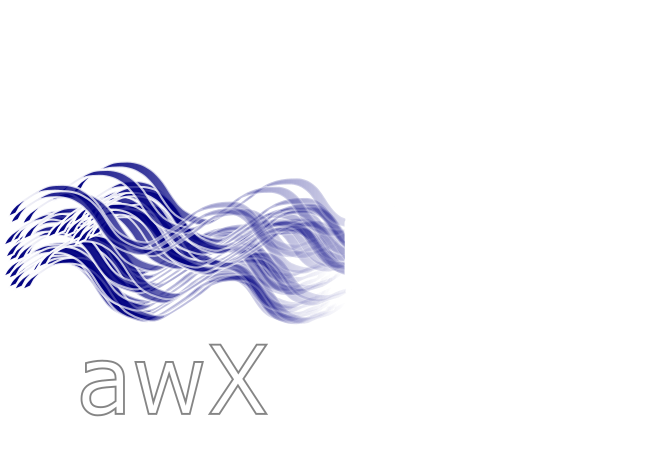

awX Stations Map
About
About the awX stations map
×
This map displays the most recent stations in the awX system. The map can be used to search existing stations, get needed information to create new stations or explore a site by zooming in on a specified lat/long.